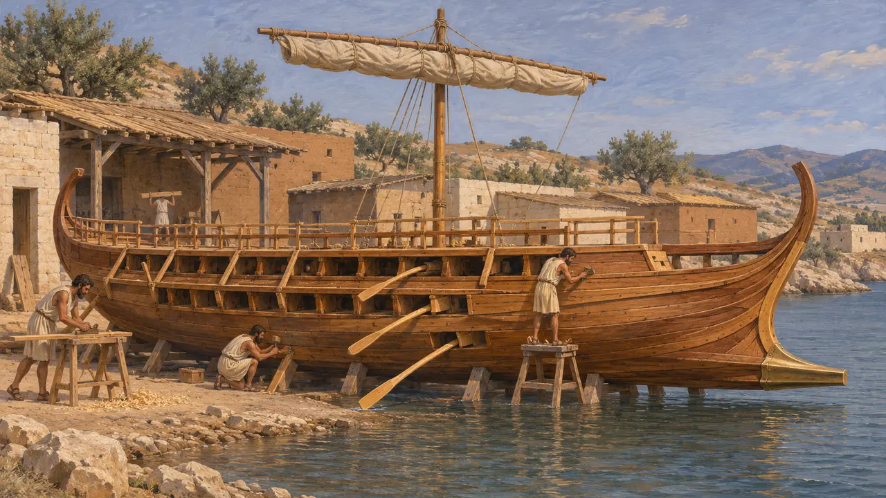
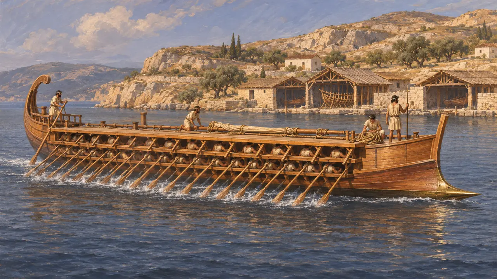
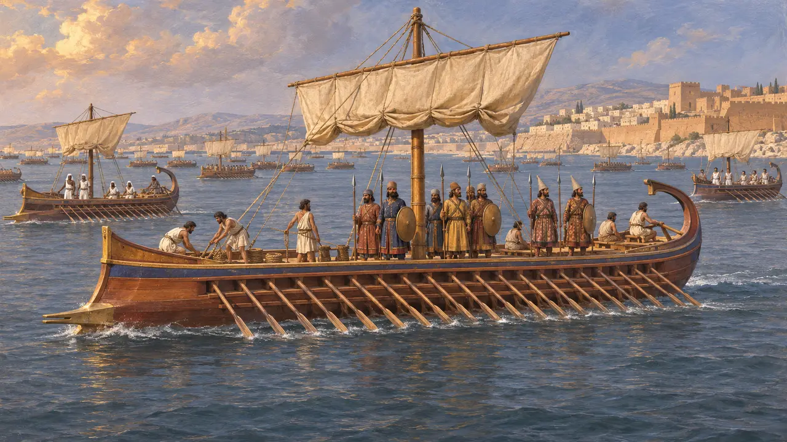
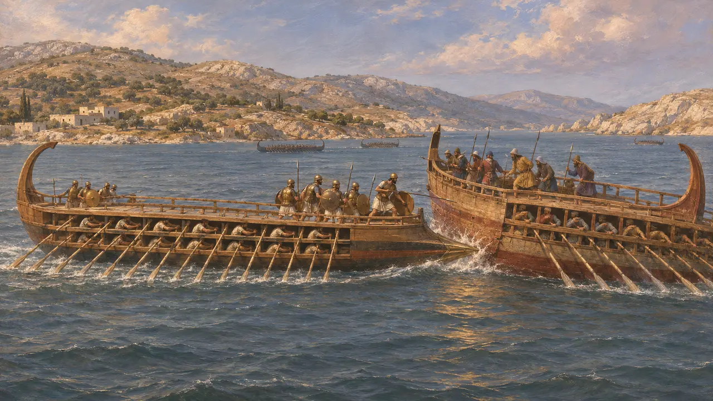
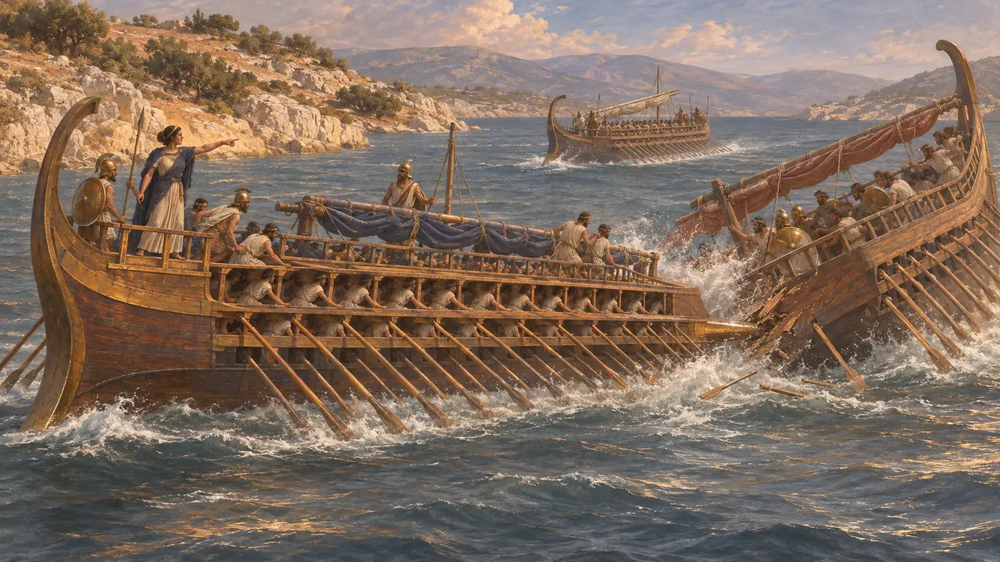

Ansiklopedi › Askerler ve gemiler

Trireme
Pers ve Yunan donanmalarının üç sıra kürekli savaş gemisi, yaklaşık MÖ 525-479
Oyunda: Bölüm 2: Mızrak Taşıyıcı
Trireme, üç sıra kürekçisi ve pruvasında tunç bir mahmuzu olan hızlı, kürekli bir savaş gemisiydi. Altıncı yüzyılın sonlarında Doğu Akdeniz'in başlıca savaş gemisi olmuştu. Fenikeli, Mısırlı, Kıbrıslı ve Kilikyalı filolar MÖ 494'te Lade'de İon asilerini ezdi. İon ve Karya gemilerinin de katılımıyla Kralın donanması MÖ 480'de Artemision ve Salamis'te Yunanlılarla savaştı.
Oyunda: Oyun Lade, Artemision, Salamis ve Mykale'de her biri kendi hızına, deniz piyadelerine ve ustalığına sahip trireme filoları sahaya sürer. Mykale'de gerçek Pers donanması karaya çekilmişti ve çarpışma karada geçti; bu noktada oyun tarihten ayrılır.

Üç sıra kürekli geminin kökenleri
TartışmalıThukydides, trireme inşa eden ilk Yunanlıların Korintliler olduğunu ve Korintli Ameinokles'in MÖ 404'ten yaklaşık üç yüzyıl önce Samos için dört gemi yaptığını söyler (Thukydides 1.13). Herodotos ise firavun II. Nekho'nun MÖ 600 civarında Mısır'da triremeler yaptırdığını aktarır (Herodotos 2.159). Bazı sonraki yazarlar bu buluşu Fenikelilere atfetmiştir. Tarihçiler bu gemi tipinin Yunanistan'da mı yoksa Levant'ta mı doğduğunu ve büyük filolarının ne kadar erken var olduğunu hâlâ tartışır.
Thucydides 1.13; Herodotus 2.159; H. T. Wallinga, Ships and Sea-Power before the Great Persian War, 1993

Geminin yapımı ve kürek çekilmesi
TartışmalıHiçbir trireme batığı bulunamamıştır; bu yüzden tasarım, Atina gemi barınaklarından, birkaç kabartmadan ve dördüncü yüzyıla ait donanma envanterlerinden yola çıkılarak yeniden kurulur. Akademisyenlerin çoğu, üç sıra hâlinde yaklaşık 170 kürekçi taşıyan, 35 metre kadar uzunlukta bir gövdeyi kabul eder. Yunan donanmasının 1987'de denize indirdiği yeniden yapım Olympias, böyle bir geminin kürekle hızlı yol alabildiğini göstermiştir. Kürek düzeninin ayrıntıları hâlâ tartışmalıdır ve Fenike gemileri farklı biçimde inşa edilmiş olabilir.
J. S. Morrison, J. F. Coates and N. B. Rankov, The Athenian Trireme, 2000

Kralın süvari bölükleri
Antik anlatıHerodotos, Kserkses'in MÖ 480 yılında 1.207 triremesi olduğunu yazar. Bunlar arasında 300 Fenike, 200 Mısır, 150 Kıbrıs, 100 Kilikya, 100 İon ve 70 Karya gemisi vardı; hepsi Pers, Med ve Saka deniz piyadeleri taşıyordu. En iyi yelken açan gemilerin de Sidon gemileri olduğunu söyler (Herodotos 7.89-96). Aiskhylos aynı toplamı verir, ancak birçok tarihçi bu sayıyı fazla yüksek bulur. Herodotos, Kambyses'in donanmasının da daha o zamandan Fenikelilere bağımlı olduğunu söyler (Herodotos 3.19).
Herodotus 7.89-96; Herodotus 3.19; Aeschylus, Persians

Koçbaşıyla savaşmak
Antik anlatıBir trireme ya mahmuzlayarak ya da deniz piyadelerini rampa etmek üzere düşman gemisine yanaşarak savaşırdı. Herodotos diekplous'u MÖ 494'te Lade'de ve MÖ 480'de Artemision'da anar (Herodotos 6.12, 8.9). Bu muhtemelen düşman hattını yarıp yandan mahmuzlamaktı. Herodotos, Themistokles'e Salamis'teki boğazın darlığının Yunanlıların sayıca az ama daha ağır gemilerinin işine yarayacağını savundurur (Herodotos 8.60). MÖ 479'da Mykale'de Persler gemilerini karaya çekip karada savaştılar (Herodotos 9.96-106).
Herodotus 6.12; Herodotus 8.9; Herodotus 8.60; Herodotus 9.96-106

Artemisia dost bir gemiyi mahmuzluyor
Geç dönem efsanesiHerodotos'un kendisi Halikarnassosluydu. Anlattığına göre Salamis'te Halikarnassos kraliçesi Artemisia'yı bir Atina gemisi kovalamış, o da Kalyndalı dost bir gemiyi mahmuzlayıp batırarak kurtulmuştu. Kıyıdan izleyen Kserkses'in, onun bir düşman gemisini batırdığını sanarak erkeklerinin kadın, kadınlarının erkek olduğunu söylediği rivayet edilir (Herodotos 8.87-88). Öykü bir talih ve kurnazlık hikâyesi olarak kurgulanmıştır ve doğrulanamaz.
Herodotus 8.87-88
Kaynaklar
- Herodotus, Histories 2.159, 3.19, 6.6-17, 7.89-96, 8.1-96, 9.96-106
- Thucydides 1.13-14
- Aeschylus, Persians
- J. S. Morrison, J. F. Coates and N. B. Rankov, The Athenian Trireme, 2000
- H. T. Wallinga, Ships and Sea-Power before the Great Persian War, 1993
- P. Briant, From Cyrus to Alexander, 2002